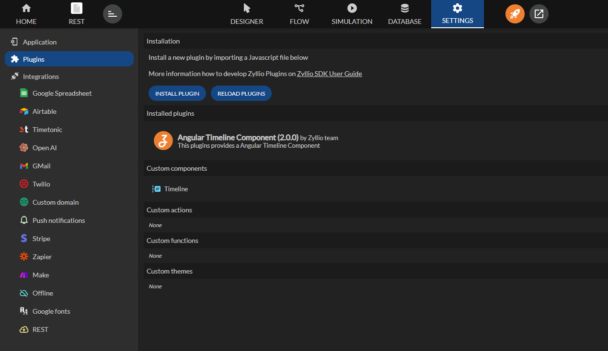

Plugins
Zyllio offers the ability to extend and customize its interface and features through plugins.
These plugins are developed using an SDK available on GitHub.
Plugin development is primarily based on TypeScript, which is a superset of JavaScript that adds a static typing system. Zyllio's SDK fully supports TypeScript, allowing developers to write more structured and secure code while benefiting from strong typing.
Zyllio's GitHub SDK also provides documentation, code examples, and tools for testing and debugging plugins during development. Developers can clone the GitHub repository, explore the provided examples, and adapt them to their needs to quickly build functional plugins.
Plugins can include different types of custom components:
- Visual component**: An interface or visual element to display.
- Action: A function triggered by a user.
- Formula: A custom function for calculations or automations.
- Theme: A customization of the application's overall appearance (colors, fonts, etc.).
Prerequisites for Plugin Development
- Knowledge of JavaScript/TypeScript.
- Access to the Zyllio SDK on GitHub: https://github.com/zyllio/zyllio-sdk.
- Development tools such as Node.js for JavaScript/TypeScript development.
Installing a Plugin in Zyllio
Once the plugin development is complete, you need to install it in Zyllio via the dedicated interface in the application's settings.

After installing the plugin, it is important to click the "RELOAD PLUGINS" button to ensure the system applies the new changes and properly activates your plugin.

Using Your Plugin
Depending on the nature of the plugin, you will find your component, action, or formula in a "Plugins" section. These new elements can be used just like any native Zyllio elements.

Plugins are installed at the application level in Zyllio. Each application can have its own set of plugins